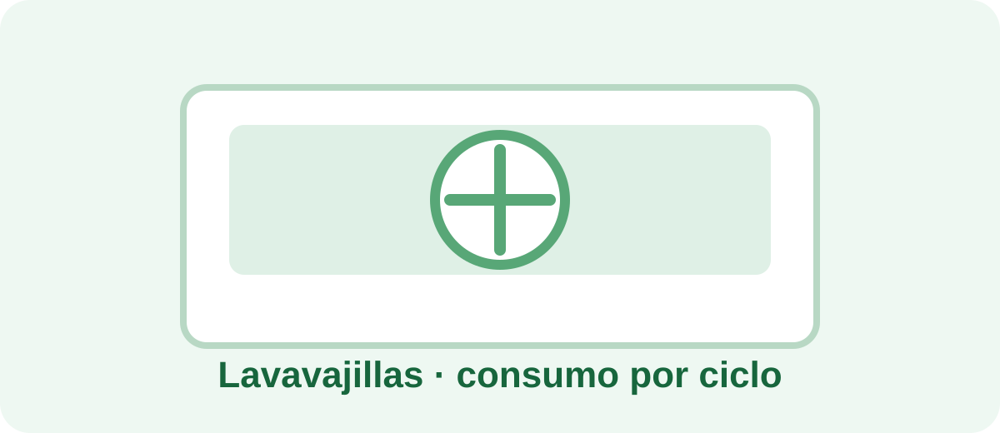

Calculadora de consumo de un lavavajillas

Calcula el coste eléctrico de usar un lavavajillas y estima su gasto mensual y anual.
Calcular ahora →¿Cuánto consume un lavavajillas?
En un lavavajillas, calentar el agua suele ser una parte importante del consumo. El programa seleccionado y la temperatura influyen en el resultado.
Para comparar programas, utiliza siempre el mismo precio por kWh y considera el consumo por ciclo, no solo la potencia máxima del aparato.
Usar calculadora con valores orientativos →¿Qué necesitas para calcularlo?
Introduce la potencia del aparato, las horas de uso, los días al mes y tu precio aproximado por kWh. Si existe consumo en espera, puedes añadirlo por separado.
Consejo para obtener un dato real
Cuando sea posible, utiliza un medidor de consumo eléctrico. Así podrás sustituir la estimación por el consumo observado de tu propio aparato.
Fórmula básica
Consumo (kWh) = potencia (W) ÷ 1000 × horas de uso.
Coste = consumo (kWh) × precio de la electricidad.
Siguiente paso: compara programas
Mide ciclos diferentes y compara el consumo real. Así podrás valorar si merece la pena cambiar de programa o de hábitos.
En calidad de Afiliado de Amazon, AhorraEnCasaYaYaYa obtiene ingresos por las compras adscritas que cumplen los requisitos aplicables.
Más herramientas
Consulta nuestra calculadora universal de consumo eléctrico para comparar distintos aparatos.